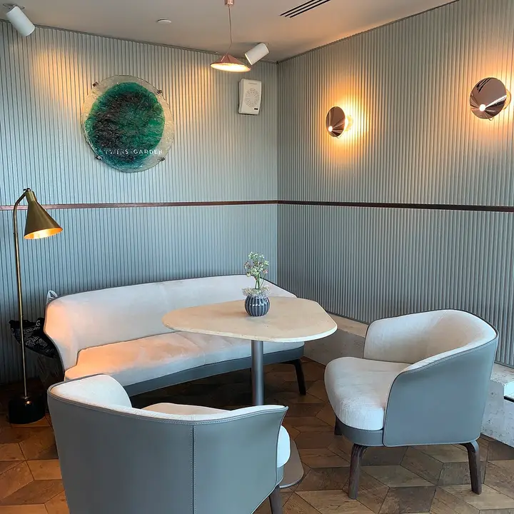
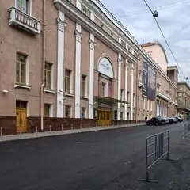
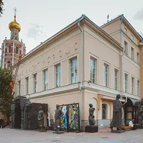
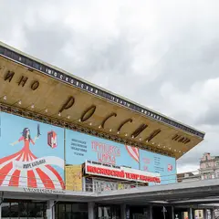

Фото: Tamara Ivanova-Issayeva, CC BY-SA 4.0 · Wikimedia Commons
Ресторан высокой кухни · ЦАО
Twins Garden
Фермерские продукты и вид на центр с седьмого этажа.
- ₽₽₽ · дороже 3 000 ₽ на человека
- Две звезды Michelin 2021
- в 2 планах
Позвать сюда: Twins GardenОткрыть в каталоге: Twins GardenМаршрут до места: Twins Garden
Адрес и детали
- Адрес
- Страстной бул., 8А
Открыть на Яндекс Картах (в новой вкладке) - Метро
- м. Чеховская
- Округ
- Центр (ЦАО)
- Цена
- дороже 3 000 ₽ на человека
- Проверено
- работает — проверили в октябре 2026
Планы с этим местом 2

- Музтеатр Станиславского · Театр оперы и балета · м. Чеховская
- 3 минуты пешкомTwins Garden · Ресторан высокой кухни
Опера или балет на Большой Дмитровке, а потом ужин в Twins Garden: две звезды Michelin, фермерские продукты и вид на центр с седьмого этажа.
Открыть план: Балет и две звездыПозвать сюда: Балет и две звезды
Фото: NVO, CC BY-SA 3.0 · Wikimedia Commons
- Twins Garden · Ресторан высокой кухни · м. Чеховская
Фермерские продукты и вид на центр с седьмого этажа — ресторан с двумя звёздами Michelin.
Открыть план: Ужин с двумя звёздамиПозвать сюда: Ужин с двумя звёздами
Фото: Tamara Ivanova-Issayeva, CC BY-SA 4.0 · Wikimedia Commons

Похожие рядом
Что ещё рядом
- Давай ламаКлуб с караоке · ≈ 1 минута пешком
- СалютВелокафе · ≈ 2 минуты пешком
 Театр НацийТеатр · ≈ 2 минуты пешком
Театр НацийТеатр · ≈ 2 минуты пешком
ММОМА на ПетровкеМузей современного искусства · ≈ 3 минуты пешком- Музтеатр СтаниславскогоТеатр оперы и балета · ≈ 3 минуты пешком

Московский театр мюзиклаТеатр мюзикла · ≈ 4 минуты пешком
Как позвать
- Выбери план, место или событие — в карточке адрес, цены и маршрут в Яндекс Картах.
- Нажми «Позвать сюда» — соберётся приглашение-игра для свидания или голосование для компании.
- Отправь ссылку в любой мессенджер: тебе ответят, а компания отметит, куда и когда может. Бесплатно и без регистрации.